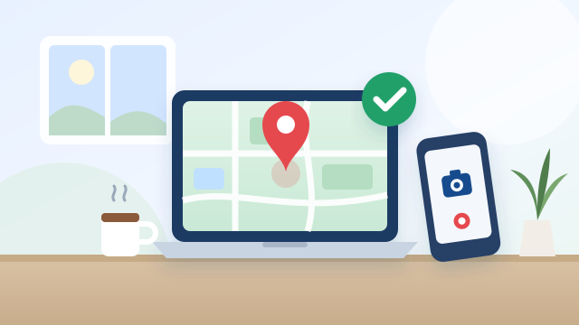

NHÂN SỰ
Chấm công
Chọn hình thức chấm công phù hợp với nơi bạn làm việc hôm nay.
Chấm công tại công ty
Khu vực Quận 4
Giờ làm 08:30–17:30. Xác minh bằng vị trí GPS.
Tiếp tục
Chấm công tại công ty
Khu vực Bến Thành
Giờ làm 09:00–17:00. Xác minh bằng vị trí GPS.
Tiếp tục

Chấm công làm online Chụp ảnh và chia sẻ vị trí nơi bạn đang làm việc. Tiếp tụcVị trí chấm công Bến Thành
Chỉ Admin/CEO quản lý. Nhân viên chỉ check-in và check-out tại Bến Thành được khi ở trong bán kính quanh điểm này. Có 2 cách lưu: dán tọa độ, Plus Code hoặc link Google Maps của công ty, hoặc đứng tại công ty và lưu vị trí hiện tại.
📍 Khu vực Bến Thành
Điểm đang lưu: Đang tải...